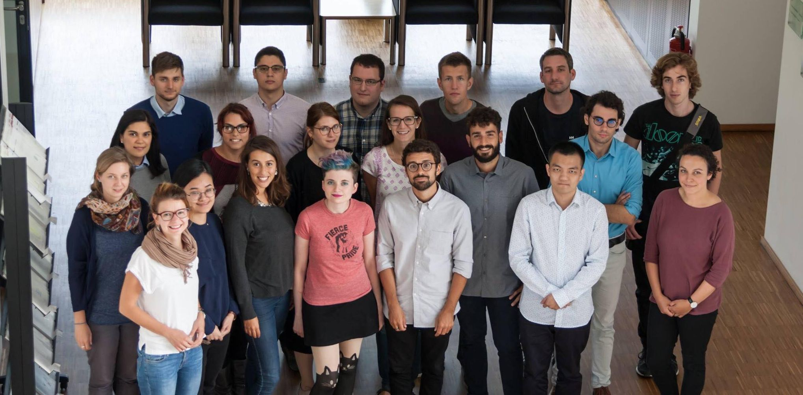
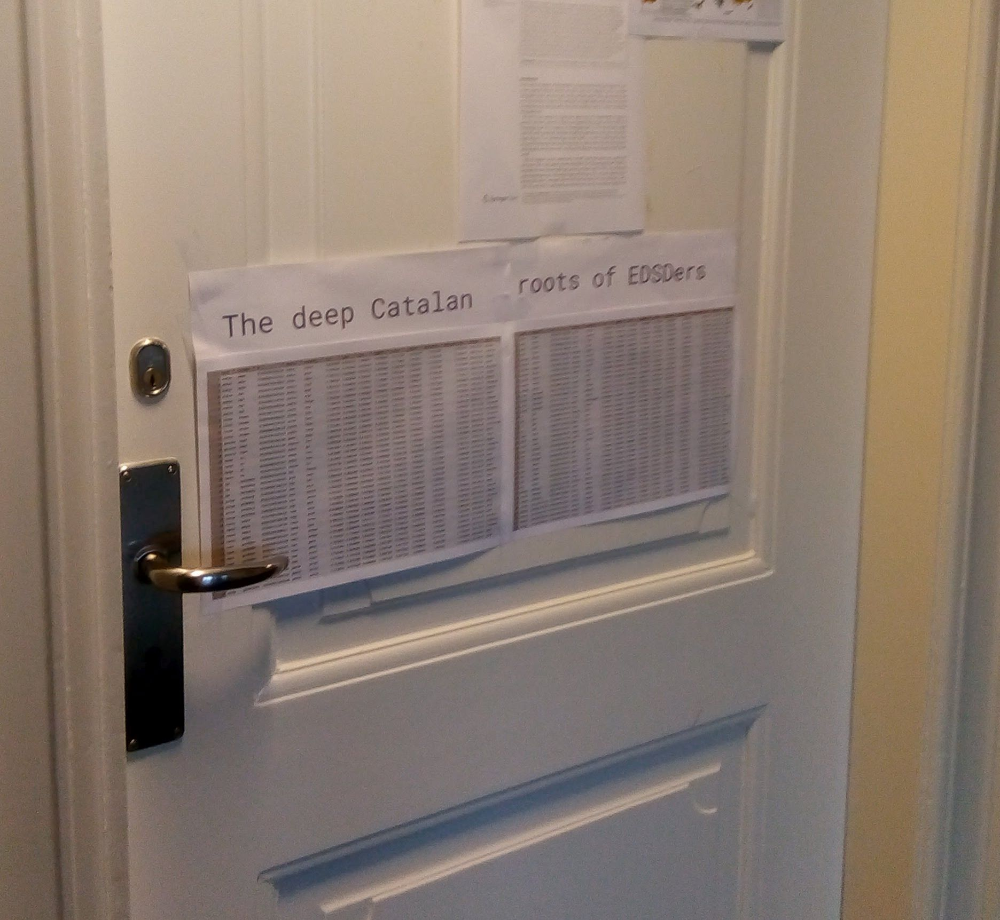
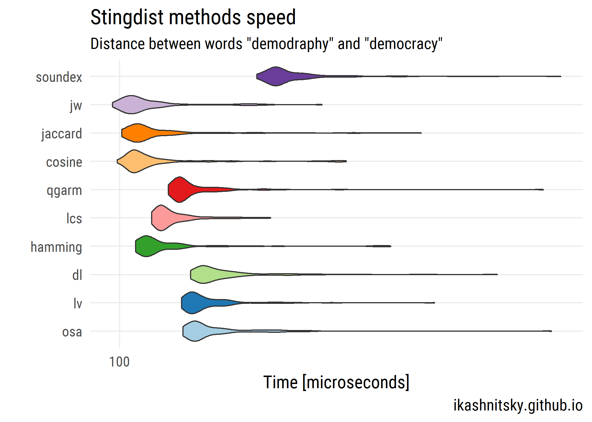
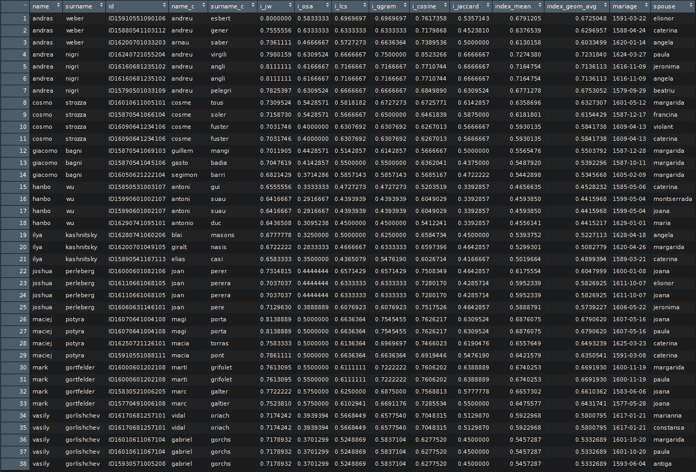
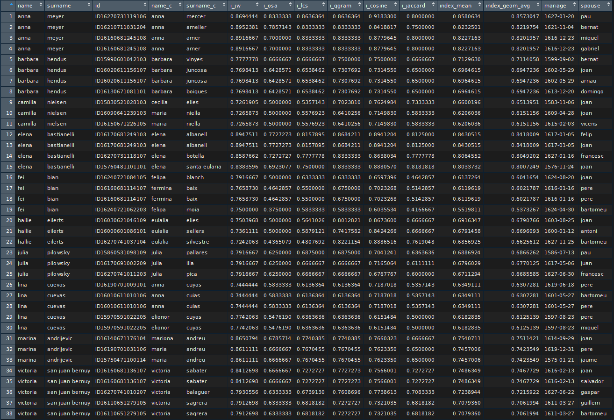

Deep Catalan roots: playing with stringdist
Ilya Kashnitsky ![]()
Preambule
This academic year I am participating in European Doctoral School of Demography. It is a unique one-year-long training for PhD students in demography. It keeps migrating across European research centers; this year Jim Vaupel’s research group in Odense hosts the program. Best demographers visit us to give us various one-week-long courses. Here we are, the EDSD cohort 2017/18:

The creative task
Back in February (yes, I know, that was a quarter of a year ago, EDSD is quite dense), Francisco Villavichencio gave us a fascinating lecture on probabilistic string matching. Pancho used the approach in one of his PhD papers, in which he squeezed some demographic knowledge from scarce Catalan data on marriages that happened back in 16-17 centuries. Each marriage record contains name of a bride, name and surname of a groom, and the same data for two pairs their of parents. Having data for period spanning several adjacent generations, Pancho linked kids to their parents, thus getting interval censored dataset on demographic events of Renaissance Catalans. From this data he managed to estimate life expectancy of that population! Just make sure you check the paper if you want more details:
Villavicencio, F., Jordà, J. P., & Pujadas-Mora, J. M. (2015). Reconstructing lifespans through historical marriage records of Barcelona from the sixteenth and seventeenth centuries. In Population reconstruction (pp. 199–216). Springer.
Our assignment was to play with a sample of the dataset and link daughters, who got married in 1597–1629, to their possible parents, who got married in 1573–1617, using string distance metrics. But that’s not what I am about to show you.
A side-walk solution
While doing the assignment, I decided to check if there lived “re-incarnations” of my group-mates in Barcelona back in the day. Instead of linking daughters to parents I linked us, 20 young demographers from various countries, to Catalans from 16-17 century. Here is how I handed in the assignment =)

So, let’s dive into string distances and probabilistic string matching.
For the sake of post’s readability, this time I chose not to insert code chunks in the post. Instead, you are welcome to explore the github repo that replicates all the analyses presented here. Since I cannot publish openly a big chunk of The Barcelona Historical Marriage Database, the guthub repo only contains minimal indicative data sample – 10 best matching records to each of the groupmate’s name.
Exploring the methods
There are multiple ways to calculate string distances. Most popular are implemented in stringdist R package. I’m not going to present the methods themselve, just check stringdist documentation if interested. All of the methods are pretty costly computationally. Even when each particular comparison happens quite fast, the problem is that for each person, for whom a match is being searched, we need to run the comparison with each of the records in the other dataset. Of course, when you want to use several methods and average the result of their “voting”, it takes even more time. Thus, a good idea is to narrow the list of candidates for matching as much as possible.
So, first I decided to compare the speed of these methods and choose the fastest for the first step comparison. Here is what I got calculating the distance between words “demography” and “democracy”.

As we see, there is quite some variation in the speed of different methods, and sometimes an iteration takes much longer than usual. The fastest method is “jw”, Jaro-Winker distance. I use it for filtering out the pairs of candidate names that definitely have nothing in common. The choice of the cutting-off threshold is, of course, arbitrary and is based on empirical tests. The trade-off here is, on the one hand, to narrow down the list of candidates for match but, on the other hand, not to throw away the possible match based on just one distance measure.
Finally, let’s find our Catalan “ancestors”
Instead of choosing some cut-off value I ranked the results of “jw” distance and filtered 10 best fitting results for each of the names of my fellows. For these pre-selected candidates I calculated also several other distance measures: “osa”, “lcs”, “qgram”, “cosine”, and “jaccard”. In the final tables I showed only 3 best matching results ranked by the geometric average of all the 6 calculated distances taken with equal weights.
Here is the table for guys:

My personal favorite here is Hanbo Wo becoming Antonio Duc.
And a similar table for girls:

Here I like Elena Bastianelli turning to Elena Albanell.
Conclusions
There are 20 people in our EDSD group, 10 guys and 10 girls. We come from different countries: Germany, Italy, China, United States, Russia, Spain, Mexico, Bosnia, Poland, Hungary, Estonia, and Denmark. Our names are quite different from that of 16-17 century Catalans. Still, using string distance matching we can find similarly named persons in the historical dataset. This fun example just exposes the power of formal text mining approach.